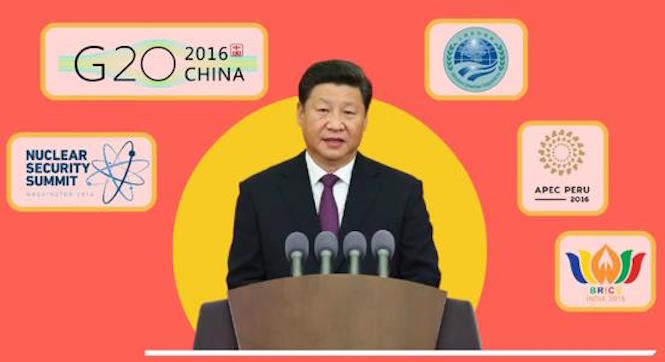

2016年岁末，习近平总书记在全国政协新年茶话会上，言简意明勾勒出过去一年全面深化改革持续强劲纵深推进的良好态势，充分肯定了一年来改革取得的成果。这一年，以习近平同志为核心的党中央，以“明知山有虎，偏向虎山行”的勇气大刀阔斧、攻坚克难，以“图难于其易，为大于其细”的智慧运筹帷幄、总揽全局，以“咬定青山不放松”的决心严明责任、狠抓落实，推动全面深化改革奋力前行，积厚成势。 全面深化改革，翻过一山又一山，快马加鞭未下鞍。2016年岁末，习近平总书记在全国政协新年茶话会上，言简意明勾勒出过去一年全面深化改革持续强劲纵深推进的良好态势，充分肯定了一年来改革取得的成果。这一年，以习近平同志为核心的党中央，以“明知山有虎，偏向虎山行”的勇气大刀阔斧、攻坚克难，以“图难于其易，为大于其细”的智慧运筹帷幄、总揽全局，以“咬定青山不放松”的决心严明责任、狠抓落实，推动全面深化改革奋力前行，积厚成势。 全面深化改革，翻过一山又一山，快马加鞭未下鞍。2016年岁末，习近平总书记在全国政协新年茶话会上，言简意明勾勒出过去一年全面深化改革持续强劲纵深推进的良好态势，充分肯定了一年来改革取得的成果。这一年，以习近平同志为核心的党中央，以“明知山有虎，偏向虎山行”的勇气大刀阔斧、攻坚克难，以“图难于其易，为大于其细”的智慧运筹帷幄、总揽全局，以“咬定青山不放松”的决心严明责任、狠抓落实，推动全面深化改革奋力前行，积厚成势。 全面深化改革，翻过一山又一山，快马加鞭未下鞍。